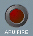

Flight Interphone Service Panel
APU Fire Light
The APU fire light illuminates when an APU fire is detected on the ground. An external warning horn sounds. the APU fire extinguisher discharges 3 seconds automatically after the fire warnings activate. The APU FIRE light extinguishes and the external warning horn silences when the fire is extinguished.